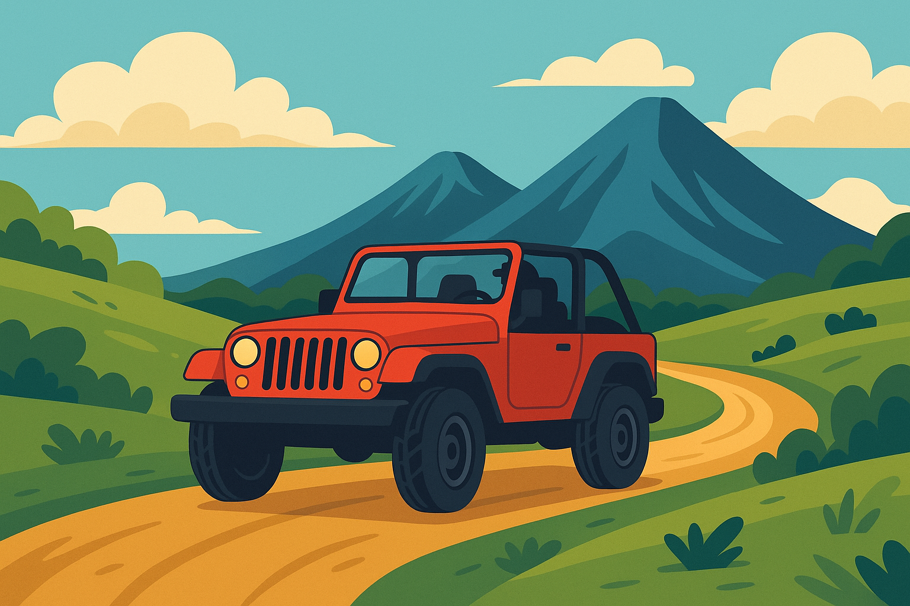

Paket Jeep Dieng — Sunrise, Offroad, dan Hidden Gem Eksklusif
Pengalaman Wisata Alam Terbaik & Anti-Mainstream di Dataran Tinggi Dieng

Jelajahi pesona alam Dieng dengan cara yang berbeda: paket Jeep Dieng hadir buat kamu yang ingin sensasi offroad seru, sunrise di bukit, hingga mengunjungi hidden gem yang tak bisa dijangkau kendaraan biasa. Paket ini sangat cocok untuk solo traveler, pasangan, keluarga, ataupun rombongan kecil yang ingin menjelajah lebih jauh, tanpa ribet dan dijamin seru!
Sunrise adventure jadi andalan — nikmati matahari terbit dari spot legendaris seperti Batu Pandang, Gunung Prau Basecamp, atau Bukit Sikunir. Tak hanya itu, kamu juga bisa eksplor jalur-jalur offroad dan destinasi alam tersembunyi yang masih alami, mulai dari sabana, hutan pinus, hingga spot-spot foto Instagramable yang jarang diketahui wisatawan.
Kenapa Pilih Paket Jeep Dieng?
- ✅ Rute fleksibel, bisa request sunrise, offroad, atau kombinasi trip sesuai keinginan.
- ✅ Driver lokal berpengalaman & ramah, tahu spot-spot terbaik dan aman.
- ✅ Jeep 4x4 legal, nyaman, dan perawatan rutin.
- ✅ Sudah termasuk tiket wisata di rute, BBM, parkir, dan fasilitas standar keamanan.
- ✅ Cocok untuk pre-wedding, konten kreator, outing, atau sekadar healing tipis-tipis.
Jenis Trip Jeep Dieng & Rute Favorit
- Sunrise Jeep Adventure — Jemput dini hari ke penginapan/meeting point, trip ke Bukit Sikunir/Batu Pandang untuk sunrise, lanjut ke Telaga Cebong, spot foto, dan hidden gem Dieng.
- Offroad Jelajah Alam — Rute lebih panjang: hutan, sabana, padang rumput, spot tebing, Goa Semar, dll. Sensasi offroad ekstrim dengan view spektakuler.
- Combo Tour Jeep + Wisata Dieng — Gabungan jelajah jeep + kunjungan ke destinasi utama Dieng: Candi Arjuna, Kawah Sikidang, Telaga Warna, dll.
- Custom & Private Trip — Mau request spot, waktu trip, atau sesi foto khusus? Semua bisa diatur sesuai kebutuhan peserta.
| Pilihan Paket | Durasi | Peserta | Harga mulai |
|---|---|---|---|
| Jeep Sunrise Adventure | 3–4 jam | 1–4 orang | Rp350.000 |
| Offroad Jelajah Alam | 5–6 jam | 1–4 orang | Rp500.000 |
| Combo Jeep + Wisata Dieng | 6–8 jam | 1–4 orang | Rp750.000 |
| Private Jeep Custom Trip | 6–10 jam | 1–4 orang | Mulai Rp850.000 |
Note: Harga sudah termasuk jeep 4x4, driver lokal, tiket wisata rute jeep, BBM, dan parkir. Belum termasuk makan/minum pribadi.
Fasilitas Paket Jeep Dieng
- ✅ Jeep 4x4 legal, sopir lokal (ramah & berpengalaman)
- ✅ Tiket masuk wisata di rute jeep
- ✅ BBM, parkir, biaya operasional
- ✅ Rute bisa request/custom sesuai keinginan
- ✅ Antar-jemput penginapan (area Dieng/Wonosobo) — *khusus sunrise trip*
- ✅ Dokumentasi foto (basic) — *khusus paket tertentu*
Tips & Persiapan Jelajah Jeep Dieng
- Gunakan pakaian hangat, jaket tebal, dan sepatu nyaman (udara sangat dingin di pagi hari).
- Bawa kamera/smartphone, powerbank, dan pelindung debu (buff/masker) untuk offroad.
- Booking lebih awal di musim liburan/weekend — kuota jeep terbatas!
- Selalu ikuti arahan driver & guide demi keamanan bersama.